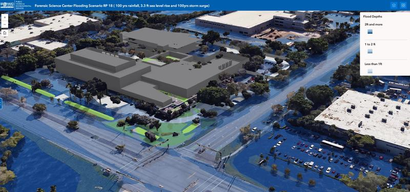

← Climate Risk & Resilience
Flood · Stormwater · Site scale
Will a flood shelter stay usable? Flood risk for a new county building
Forensic Science Building, flood and stormwater analysis · Broward County Government · 2025–26
Broward County is planning a new forensic science building that will also serve as a flood evacuation centre. Will the site, and the streets people use to reach it, stay usable in a 100-year storm, a storm surge or higher seas?
What I did
- Applied the county resilience plan scenarios (100-year rainfall, storm surge and sea level rise) to the site and a one-mile area around it.
- Measured flood depth and flood elevation across the site and the surrounding streets.
- Built 3D GIS models showing where water would reach and how deep, so the design team could see the risk.
- Presented the findings to the design team.
Result
The findings fed directly into changes to the site design and planning approach, so the building can do its job as an evacuation centre.
